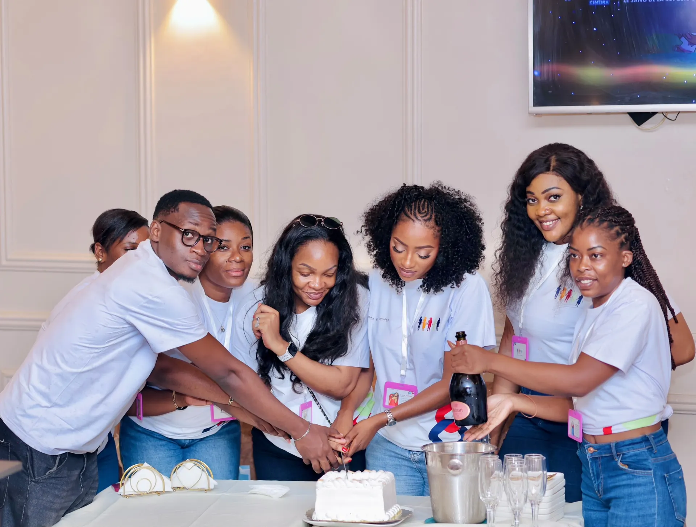
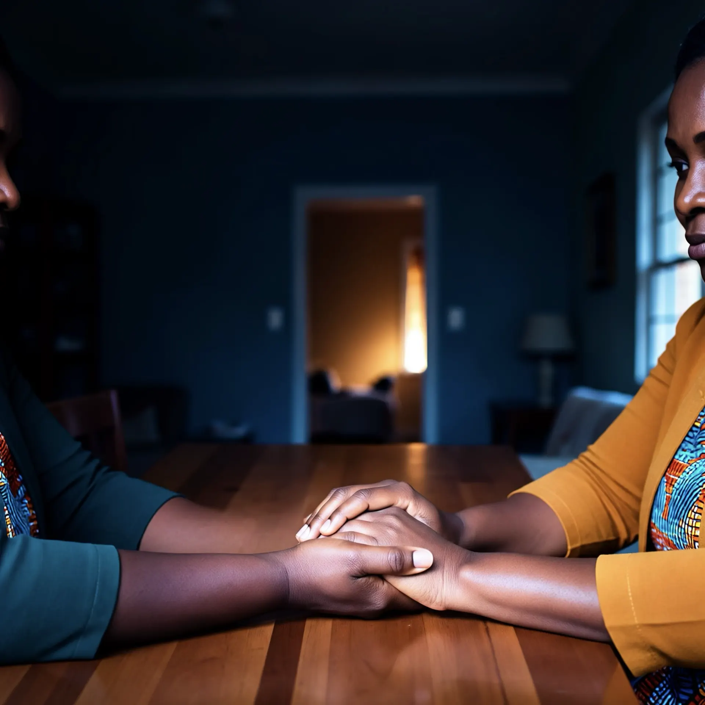
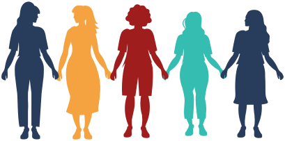

Née à
Yaoundé
Derrière Femme en Lumière, une femme qui a décidé de briser le silence.
L'Association Femme en Lumière (AFEL) accompagne les femmes atteintes du SMOP, le syndrome métabolique ovarien polyendocrinien, nouveau nom du SOPK (syndrome des ovaires polykystiques). Notre mission : sensibiliser, informer, écouter et accompagner. Nous offrons un espace d'échange et de soutien où chaque femme peut comprendre le SMOP, partager son expérience et ne plus se sentir seule. Nous orientons nos membres vers des professionnels de santé pour un suivi adapté, et nous suivons l'évolution de leur bien-être dans la durée. Aucune femme ne devrait traverser le SMOP seule : rejoignez le mouvement.


- 01
Sensibiliser
Faire connaître le SMOP, nouveau nom du SOPK, pour qu’il sorte de l’ombre.
- 02
Créer un espace de dialogue
Un espace d’échange et de soutien où chaque femme peut comprendre le SMOP, partager son expérience et ne plus se sentir seule.
- 03
Orienter vers des professionnels de santé
Nous orientons nos membres vers des professionnels de santé pour un suivi adapté.
- 04
Suivre l’évolution du bien-être
Nous suivons l’évolution du bien-être de nos membres dans la durée.
Elles parlent. 
On les écoute.
« Pendant des années, j’ai cru que mes cycles irréguliers étaient de ma faute. Au premier cercle de parole, j’ai compris que je n’étais pas seule. J’ai enfin osé consulter. »
Ce témoignage engage son auteure et ne constitue pas un conseil médical.
Actualités